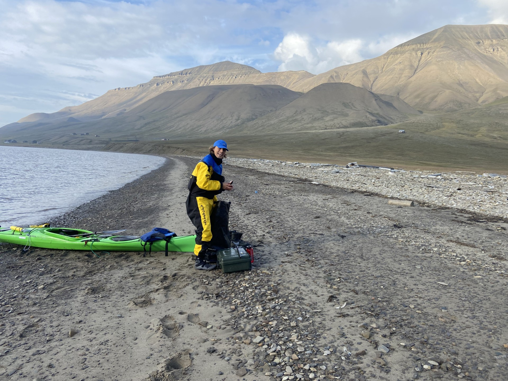
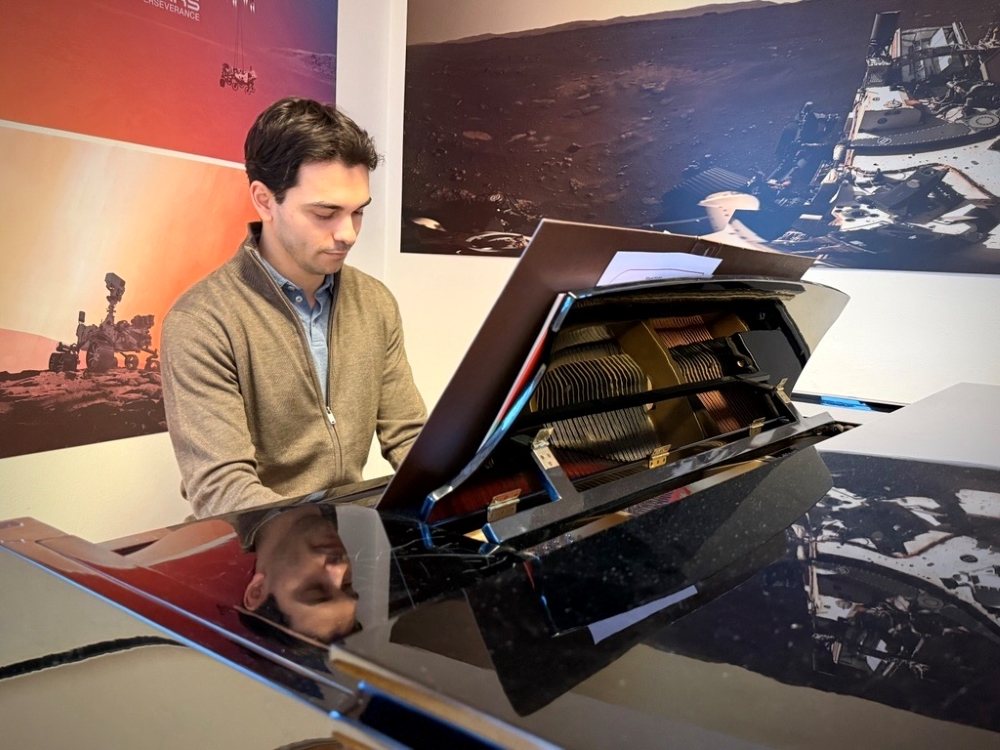
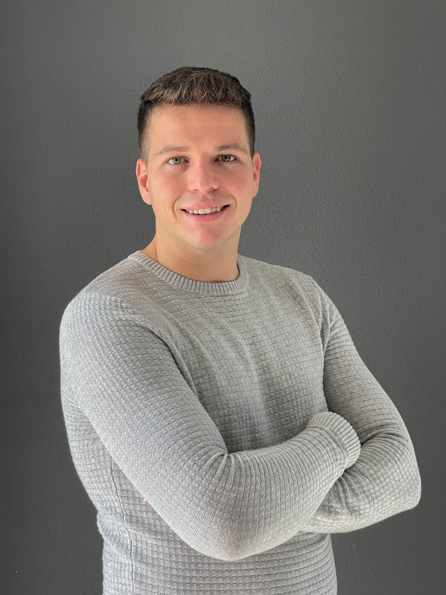
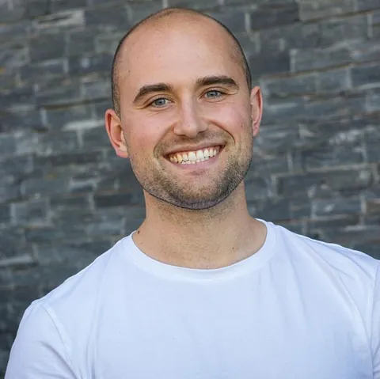
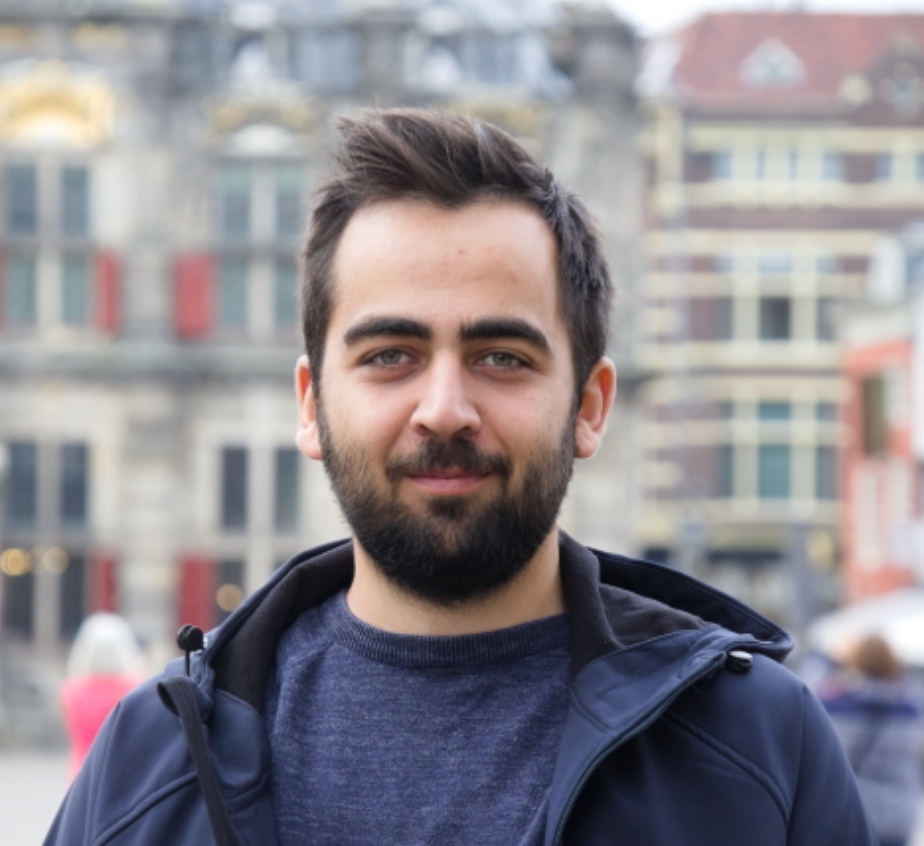
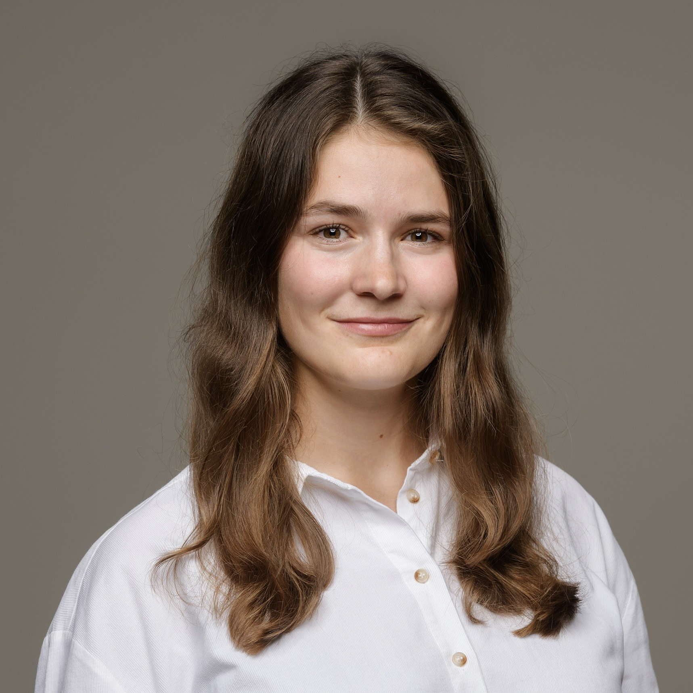

Johan Fredrik Agerup
Reinforcement learning for multi-agent source detection in land-atmosphere gas exchange.

Reinforcement learning for multi-agent source detection in land-atmosphere gas exchange.

Performance guarantees for nonlinear systems using integral quadratic constraints, with applications to spacecraft GNC.

Nonlinear and hybrid data-driven control, with applications in autonomous underwater vehicles

Distributionally robust optimization and control for virtual power plants.

Robust verification of AI toolchains for maritime control and automation systems.

Digital twins in the context of robust spacecraft operation
How to use virtual power plants in the context of sustainable telescope operations

AI and data-driven control for optimizing wastewater treatment
Behind-the-meter optimization for distribution grid flexibility

Optimal networks for control and optimization